미국 아마존 세럼 카테고리 오늘(8/19) 1위. 메타 활성 광고 ~510건, 아마존 스폰서 매치 키워드 2,115개 — 마녀공장·ARENCIA를 합친 것보다 큰 스케일이다. BSR·가격·리뷰가 같은 이야기를 하고, 배경조사에선 자기소개 매출("2,000억+")이 실측(816억)과 어긋난다는 것까지 확인했다.
동시에 이미 우리와 충돌 중이다 — 히어로 PDP의 "관련 상품" 슬롯에 우리 Lemonshot 세럼($36.58)이 실제로 노출되고 있다. 리서치 대상이 아니라 지금 같은 SERP를 다투는 상대.
히어로 ASIN B0DG4WXBCF(Retinal Skin Booster Serum). 8/15 시즌 캠페인 시작 → 8/17 가격 -30% →
8/18~19 BSR 급등(#28→#14, 세럼 #1) — 날짜가 다 찍혀 있어 우연으로 보기 어렵다.
뷰티&퍼스널케어 전체 BSR(낮을수록 좋음) · 2026-07-20~08-19
세럼 서브카테고리 BSR — 대부분 기간 #1~3 유지, 오늘 #1
리뷰 수 누적 — 30일간 7,818 → 9,989개(하루 평균 +72개). 같은 기간 평점은 4.4→4.3으로 소폭 하락 — 볼륨을 밀면서 만족 않는 고객도 함께 들어온다. 참고: 8/17 $19.99→$17.49(-30%)
히어로 ASIN 하나에 랭크된 키워드 10,937개를 전수 확인. 오가닉 6,175 · 스폰서 매치 2,115.
가장 눈에 띄는 것 — the ordinary glycolic acid(월 검색 136,093)에서 sponsored_rank #1.
아마존 자체가 이 PDP의 "Consider a similar item" 슬롯에 The Ordinary를 띄우는데(§3), 그 대체재 슬롯을
광고비로 되사는 정밀한 방어 전략이다. celimax·anua·dr melaxin도 매수 확인.
동시에 오가닉 지배력도 크다 — 오가닉 랭크 1위 키워드 253개. 자기 브랜드명 검색량이 월 18,595~52,429 — 오프플랫폼(틱톡 등) 유입이 아마존 브랜드 검색으로 전환되는 신호.
제조사 KOLMAR KOREA(콜마코리아, 한국 화장품 ODM 양대산맥). PDP 히어로 이미지에 "Clinically Proven Results After 4 weeks — Skin tone clarity +32%, Tightened pores +23%"를 직접 박아 넣는다 — 광고가 아니라 리스팅 메인 이미지에.
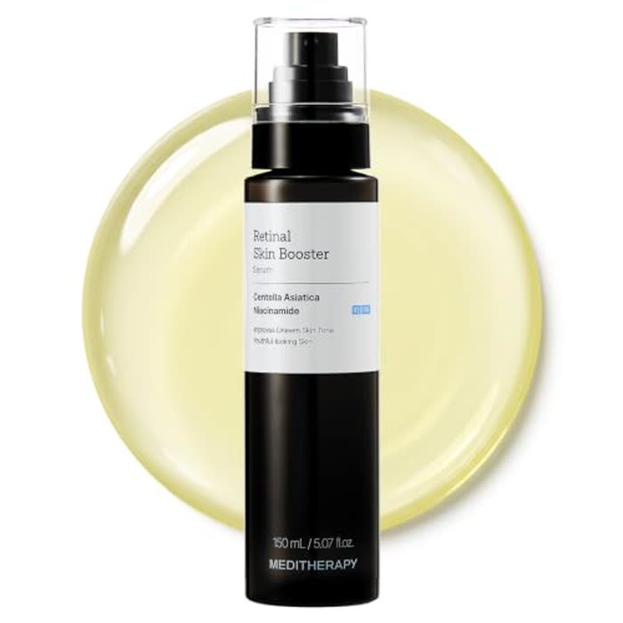
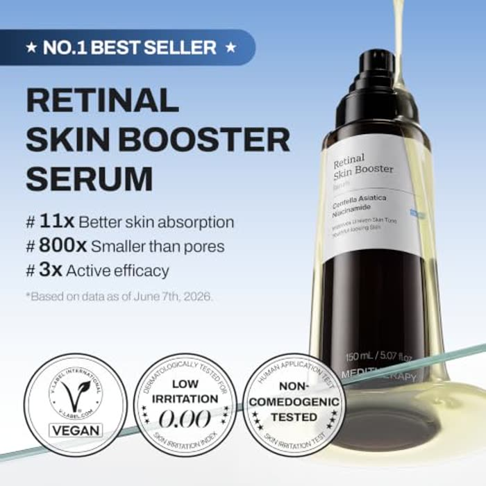
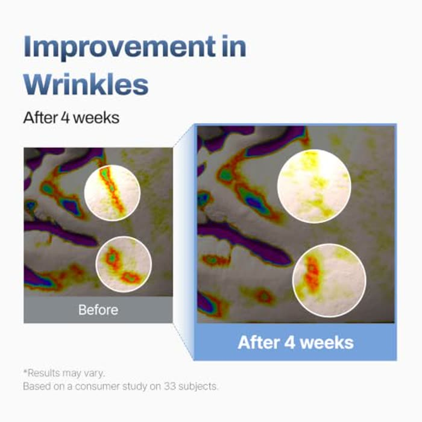
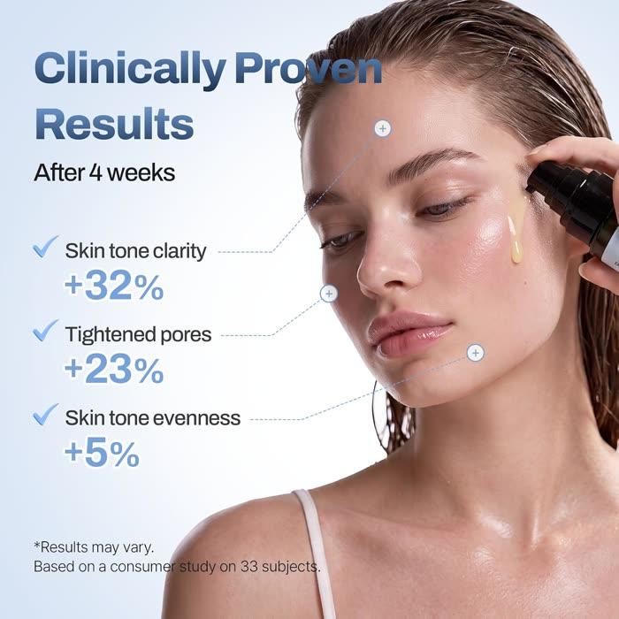
"Products related to this item"에 우리 Lemonshot 세럼($36.58, 리뷰 30개)이 실제로 노출된다. "Frequently bought together"엔 EQQUALBERRY가 자동 묶임.
AI 리뷰 요약("Customers say")이 보습·효과는 긍정하되 "burning sensations" 언급을 직접 인정한다 — 10,082개 리뷰 중 1성 8%.
독일 리뷰어가 직접 찾아낸 정보: "0.01% Retinal(100ppm)" — PDP엔 함량이 명시돼 있지 않다. 마녀공장의 "함량 비공개" 패턴과 동일. Subscribe & Save 10%(정기구독) 운영 확인.
PDP 안 "20 VIDEOS" 갤러리는 브랜드가 올린 오가닉 리스팅 콘텐츠일 뿐 유료 광고가 아니다 — 실제 SB 유닛은
SERP 스폰서 지면에서 별도 확인했다(retinal skin booster serum/meditherapy/dark spot serum 키워드, NY 10001 고정).
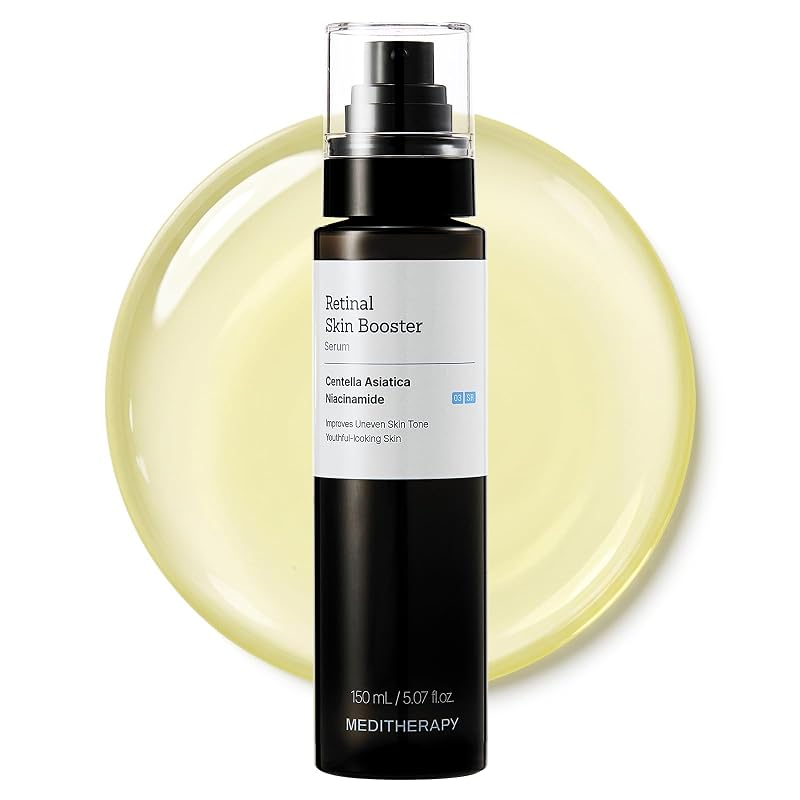
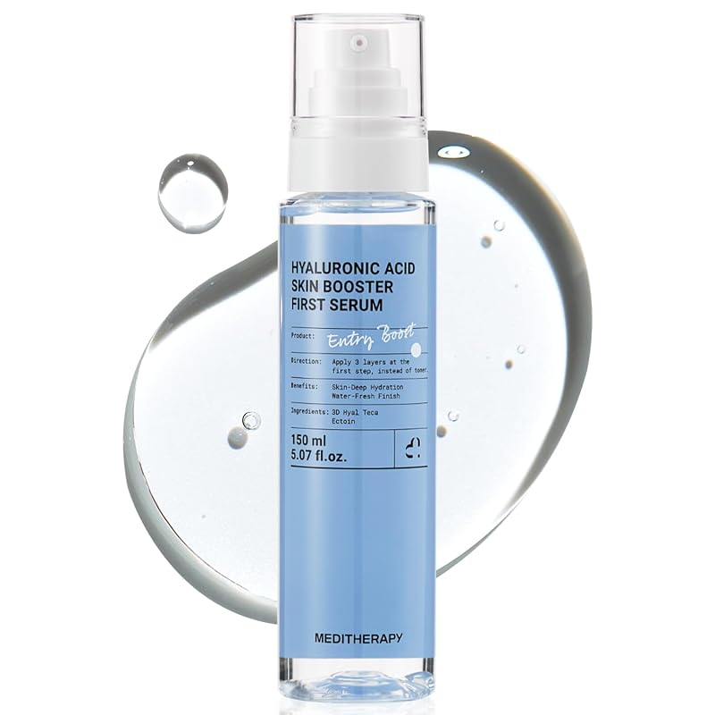
ARENCIA teardown에서 확인한 "자극 소재는 정지 위험 없는 메타로, 아마존은 규제 우등생으로"와 정확히 같은 채널 분리 전략 — 브랜드 한정 특이점이 아니라 K뷰티 퍼포먼스 마케팅의 업계 공통 플레이북일 가능성이 두 브랜드 교차 확인으로 높아졌다.
| Meta(16개 대표 소재 기준) | Amazon SB(2건) | |
|---|---|---|
| 시술메타포 | 시린지 소품·"필러 없이" 문구 | 없음 |
| 극적 변화 클레임 | "10년 젊어짐"·"sun damage cleared"·"laser 오해" | 없음 — "complete care" 수준 |
| 리뷰/후기 인용 | 실명·연령 귀속 리뷰카드 다수(고지 혼재) | 없음 |
| 메시지 성격 | 구매 전환 훅(문제→해결→긴급성) | 브랜드 신뢰·포용성 |
Meta Ad Library 전수 수집(2026-08-19, 활성 510건 중 490건/96% 수집). 카피 기준 유니크 컨셉 187개로 재정리, 경과일수 상위 40개(65~758일 운영)를 실물 다운로드 — "오래 도는 소재 = 이긴 소재" 원칙.
| 훅 패턴 | 건수 | 비고 |
|---|---|---|
| 바디(얼굴 외 부위) 소구 | 29 | 팔꿈치·겨드랑이·허벅지·무릎 — PDP "Face & Body"와 일관 |
| 스페인어 광고 | 29 | 다른 경쟁사에서 못 본 트랙 — 미국 히스패닉 세그먼트 전용 |
| 넘버링 리뷰 시리즈 | 17 | "Real Review Series #2" 형식 |
| 시술 메타포(보톡스/필러) | 14 | "Korean Botox retinal", "FILLER LOOK—WITHOUT THE NEEDLE" |
| K-문화 소구 | 8 | "K-idol glow" |
| 시술 메타포(레이저) | 4 | "Laser Effect", "Liquid Laser" |
187개 유니크 컨셉을 8개 콘텐츠 포맷으로 재분류 → 포맷별 최장수 소재 2개씩 총 16개를 실물 재생·프레임 단위로 전수 분석했다. 카피(광고 하단 텍스트)와 온스크린 캡션(영상 안 자막)이 다른 경우가 실제로 있다 — 실수가 아니라 "같은 영상을 여러 카피로 갈아끼우며 테스트하는" 구조의 증거다.
"Overnight Blue Hydrogel Mask — nano hyaluronic acid로 모공·건조 해결, 자고 일어나면 촉촉"
왜 잘되는지 — 490건 중 압도적 최장수(2위 대비 6배+) — "잘 만든 광고"가 아니라 "안 질리는 광고". 자극 없는 튜토리얼은 반복 노출에도 스킵률이 안 오르는 볼륨 러너(evergreen filler) 역할.
레몬더마 적용 — 세럼 하나에 예산을 몰지 말고 회전율 낮은 "잔잔한 튜토리얼형" 1개를 evergreen으로 상시 켜두는 실험 가치. 훅 강도와 수명은 반비례할 수 있다는 가설.
"Wipe away rough texture for a silky-smooth, even tone. ✨ SHOP NOW ON AMAZON"
온스크린 실제 훅(카피와 다름) — 수건 헤어밴드 여성이 과장된 놀란 표정 반복 — "Started using Korean Botox and suddenly I look 20 again (I'm 39 btw)🥵" 자막, 마지막 제품 들고 엄지척
왜 잘되는지 — 카피와 영상이 따로 논다는 것 자체가 발견 — 같은 "Korean Botox" 훅 영상이 다른 ad ID(카피도 동일한 유닛 존재)로 재사용된 것으로 보인다. 영상 하나 제작 → 카피만 갈아끼워 여러 ID로 복제 배포하는 구조.
레몬더마 적용 — 영상 1개 = 문구 N개 조합 재사용 구조. Higgsfield 원본 소재 하나를 여러 훅 카피로 재태깅해 배포 물량을 늘리는 실험.
"When someone says 'your skin looks so good' unprompted. That compliment hits different when it's unsolicited."
왜 잘되는지 — 명시적 Before/After 라벨 없이 거울 셀카(암묵적 비포)와 화창한 차 안 셀카(애프터)의 맥락 대비로 변화를 암시. "제3자가 먼저 알아챔"(unprompted) 프레임이 진짜 후기처럼 읽힌다.
레몬더마 적용 — 직접 좌우 비포애프터가 부담스러우면 사진 두 장의 "상황 차이"만으로 변화를 암시하는 안전한 대안.
"My skin is so tight everyone asks if I got work done. Hundreds of 5-star reviews say the same thing."
온스크린 실제 훅(카피와 다름) — "WARNING! PSA to all inquirers — Sun Damage, DELETED! Everyone literally thinks I got laser done! — Haemily R." + 단어별 캡션 플래시 + 우측 고정 후기카드 좌우 스플릿
왜 잘되는지 — ARENCIA teardown에서 확인한 "좌우 스플릿"(토크+리뷰카드 동시 노출) 공식과 동일 문법 — 경쟁 K뷰티 카테고리 전체의 표준 포맷이라는 교차 확인. 단어 단위 캡션 플래시는 무음 시청 환경에서 완독률을 강제로 끌어올리는 장치.
레몬더마 적용 — 좌우 스플릿은 ARENCIA에 이어 두 번째 확증 사례라 우리 B&A 파이프라인 이식 우선순위를 올릴 근거.
"¡Siente el poder del Retinal en tu piel! Mira la diferencia. ✨ [COMPRA AHORA EN AMAZON]"
왜 잘되는지 — 경쟁사 어디서도 못 본 트랙 — 새 소재가 아니라 기존 영어 튜토리얼 포맷을 스페인어로 재녹화. 미국 히스패닉 인구(19%)가 K뷰티 마케팅에서 구조적으로 방치돼 있다는 방증.
레몬더마 적용 — UAE 아랍어권 세그먼트에 "언어 재녹화" 전술을 먼저 적용 검토(US보다 UAE가 메인 시장).
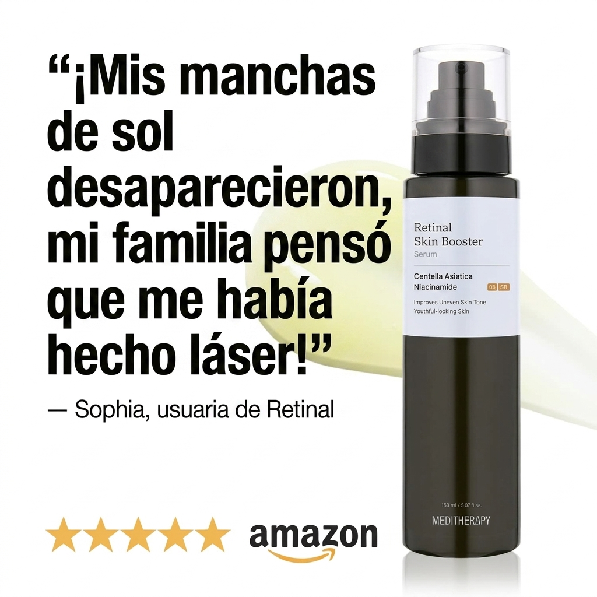
"'Se fueron mis manchas — ¡todos pensaron que usé láser!' — Sofía, usuaria de Retinal"
왜 잘되는지 — 영어 리뷰카드(⑬⑭)와 완전히 동일한 템플릿 — 텍스트만 치환. "광고 40개"가 아니라 "템플릿 4~5개 × 조합 폭발"에 가깝다는 확증.
레몬더마 적용 — 후기카드 템플릿 1개 확정 후 언어·제품별로 텍스트만 바꿔 디자인 비용 없이 소재 수를 스케일.
"Seriously, NEVER or NOT — that's the question right now. 3D Hyaluronic Acid + Ectoin locks in moisture all day."
왜 잘되는지 — 본문 카피의 "NEVER or NOT"은 광고 타이틀("Now or never")과 따로 관리된 자막 QC 갭 — 그럼에도 76일 생존. 딜 배너형은 문법 완성도가 성과에 거의 영향 없다는 뜻(긴급성 배지+병 무더기 비주얼이 카피 품질을 압도).
레몬더마 적용 — 딜 배너는 카피 완성도보다 "재고감+타이머+뱃지" 3요소가 중요하다는 가설 — QC 리소스를 비포애프터·UGC에 더 투입.
"Pure hyaluronic acid goodness — this deal won't last. ⏰ Don't wait — check the price on Amazon now."
왜 잘되는지 — 사실상 정지사진에 배지만 얹은 수준(저모션)인데 78일 생존 — 딜 배너형은 창작 노력과 무관하게 할인율/타이머 신선도만으로 수명이 결정된다는 결론 재확인. 라벨이 읽힐 만큼 클로즈업된 건 재타겟팅(이미 브랜드를 아는 유저) 용도 가능성.
레몬더마 적용 — 재타겟팅 전용 소재는 신규 소재보다 제작비를 훨씬 낮게 잡아도 된다는 벤치마크.
"No needles required. Just one drop of this K-beauty secret to erase all my fine lines."
왜 잘되는지 — "보톡스/필러 대체"라는 2025~26 스킨케어 광고 지배적 장르를 문구가 아니라 소품(바늘 없는 의료용 시린지를 이마에 대는 연출)으로 시각화 — 텍스트 클레임보다 훨씬 강한 인터럽트. 시술을 직접 언급하지 않으면서 시각적으로만 차용해 클레임 리스크를 낮췄다.
레몬더마 적용 — 마이크로니들 계열 소구와 정확히 참고 가능한 지점 — "시술 없이 시술 느낌"을 소품으로 보여주는 문법은 임상수치 없이도 강한 훅을 만드는 안전한 우회로.
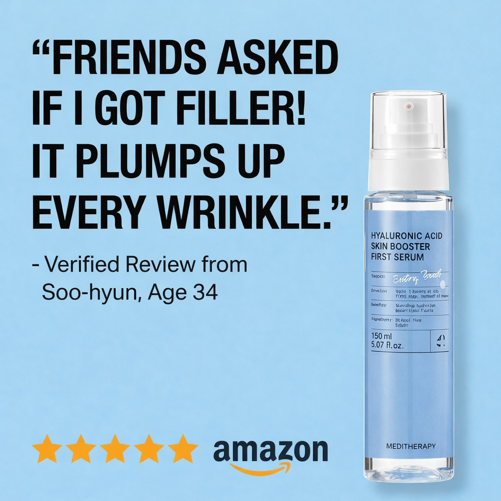
"Dry skin = more wrinkles. But deep hydration from Hyaluronic Acid fills them back in—no needles, no appointments."
왜 잘되는지 — 레티날(다크스팟) 라인뿐 아니라 HA(보습) 라인까지 "니들/필러 대체" 프레임이 그대로 적용 — 시술메타포가 브랜드 전체의 마스터 내러티브로 굳어 있다는 방증. "plumps up every wrinkle"은 필러의 효능 언어를 보습 세럼에 이식.
레몬더마 적용 — 마스터 내러티브 하나를 SKU 전체에 재사용하면 카피 개발 리소스 절약 — 우리도 톤 안에서 SKU 횡단 마스터 훅 1~2개 검토.
"Uneven skin tone on your legs? Same. 👀 Retinal + Niacinamide + Centella work together."
왜 잘되는지 — "얼굴 세럼"을 몸 전체 세럼으로 재정의 — 경쟁사 전원이 "얼굴 다크스팟" 클레임에서 정면 충돌하는 동안 이 각도로 그 경쟁을 회피한다. 150mL 대용량이 "몸까지 쓰니까 딱 맞는 병"으로 재해석됨. 젤이 흘러내리는 텍스처 샷은 클레임 없이 감각적 만족(ASMR)만으로 129일급 소재와 비슷한 수명.
레몬더마 적용 — 우리 세럼·크림도 바디 확장 각도를 하나 만들면 완전히 다른 경쟁 세트(바디로션 카테고리)로 진입 가능 — 저비용 고효율 차별화 후보.
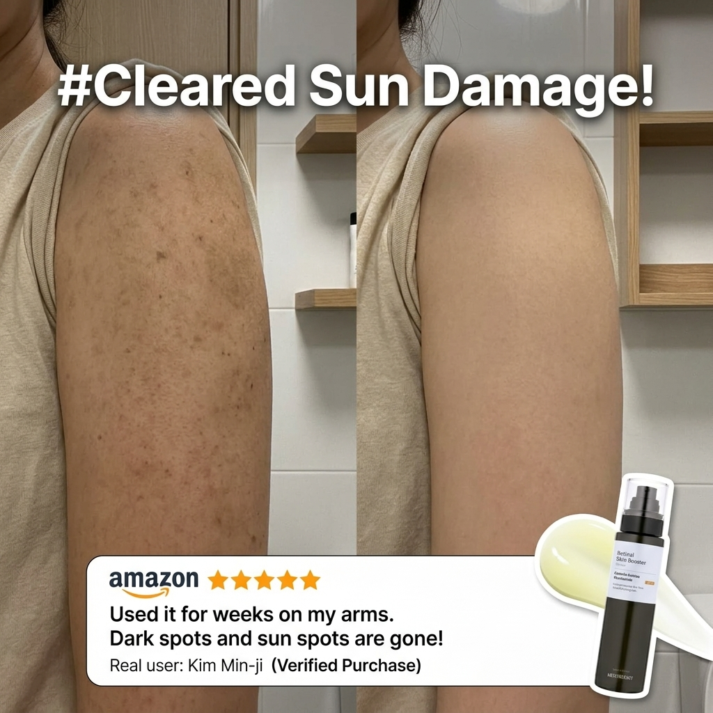
"Bro, your sun spots don't have to stay forever 👀 Face, elbows, legs — one bottle. $24.99 on Amazon."
왜 잘되는지 — "Bro"라는 캐주얼·성중립 호칭으로 전형적 여성 타겟팅을 비틀며 도달을 넓힌다. "Face, elbows, legs — one bottle. $24.99"는 바디 확장 서사를 가격 앵커와 한 문장에 압축한 카피 모범 사례.
레몬더마 적용 — "얼굴+팔꿈치+다리, 한 병, $XX" 압축 카피 공식은 그대로 벤치마킹 가능한 문장 구조.
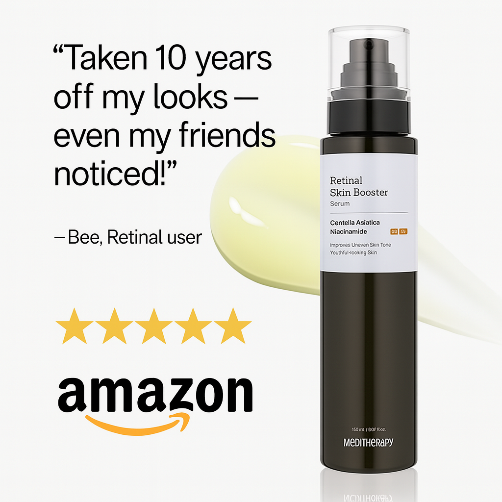
"Real Review Series on Amazon #2 "Taken 10 years off my looks - even my friends noticed!" - Bee, Retinal User"
왜 잘되는지 — "Real Review Series #2"라는 순번 태깅(전체 17건)이 리뷰 인용을 연재물처럼 운영 — 개별 광고가 아니라 시리즈로 신뢰를 축적하는 프레임. 단 사진 증거 없는 순수 텍스트 클레임이라 투명성 고지가 없다(⑭와 대비).
레몬더마 적용 — 시리즈 넘버링은 저비용으로 반복 신뢰를 쌓는 전술 — 단 우리는 반드시 실제 리뷰 인용 명시·고지를 동반해야.
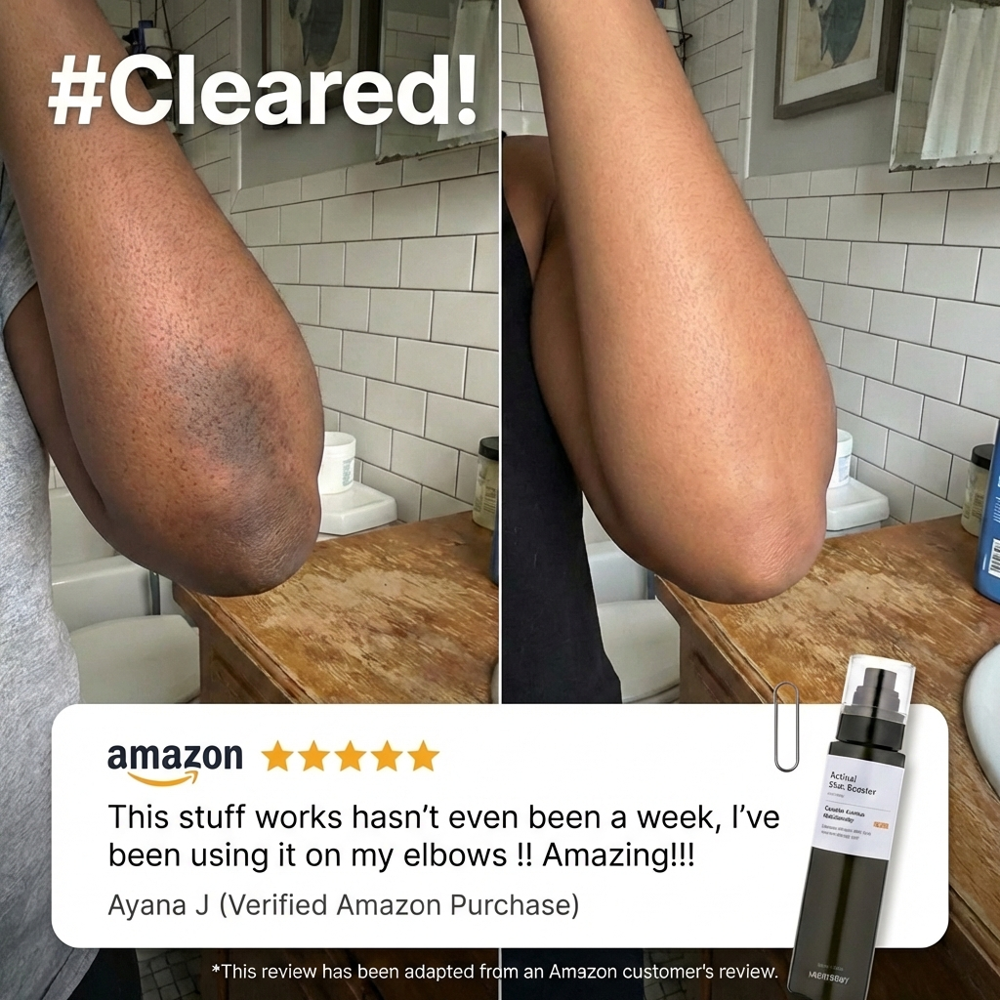
"Elbows, underarms, inner thighs — the spots we hide without talking about. *Reviews are adapted from verified Amazon customer reviews."
왜 잘되는지 — 같은 팔꿈치 전/후 포맷인데 이 유닛만 "리뷰는 각색됨" 고지가 있고 ⑬엔 없다 — 같은 브랜드 안에서도 컴플라이언스 실행이 유닛마다 다르다는 뜻(중앙 심사가 느슨하거나 담당자별 재량).
레몬더마 적용 — 후기 각색 카드는 채택 가치가 있으나 고지 문구를 템플릿 고정 필드로 박아 매 소재 자동 포함되게 — 사람이 매번 기억해 넣는 구조는 이 사례처럼 새어나간다.
"Okay, I have to tell you about this — Meditherapy's Retinal Skin Booster Serum is seriously changing the game."
왜 잘되는지 — "Retinol vs retinal?"은 이 카테고리 소비자가 실제로 헷갈리는 진짜 질문 — 교육 콘텐츠 자체가 훅이 되는 드문 사례. 화려한 편집·자극적 카피 없이 화자의 연령·신뢰도(안경·차분한 톤)로 권위를 산다.
레몬더마 적용 — "비건 마이크로 크리스탈이 마이크로니들과 뭐가 다른가" 같은 실제 헷갈리는 질문을 훅으로 쓰는 교육형 UGC — 규제 리스크가 가장 낮은 포맷.
"Okay, you NEED to hear about this — Meditherapy's Retinal Skin Booster Serum is seriously changing the game."
왜 잘되는지 — ⑮와 스크립트 90% 동일, 화자만 교체("Okay, I have to tell you" ↔ "Okay, you NEED to hear about this") — 대본 하나로 페르소나(숙련자/초심자)만 바꿔 두 세그먼트에 동시 소구하는 저비용 재사용 구조.
레몬더마 적용 — 대본 1개 = 화자 페르소나 2~3개로 재촬영하는 프로덕션 구조 그대로 채택 가능 — 대본 개발비를 화자 수만큼 나눠 갚는 효율.
| 패턴 | 근거 | 우리 시사점 |
|---|---|---|
| 바디파트 확장 = 카테고리 경쟁 회피 | 훅 패턴 29건이 얼굴 외 부위(다리·팔꿈치·겨드랑이) | 같은 제품, 다른 신체 부위 = 다른 경쟁 세트. 저비용 차별화 레버 |
| 니들/필러 메타포가 SKU 횡단 마스터 내러티브 | 시린지 소품(레티날)·필러 문구(HA)가 동일 서사 | 마스터 내러티브 1개를 SKU 전체에 재사용해 카피 개발비 절감 |
| 영상 자산과 카피가 분리 관리 | 온스크린 자막≠하단 카피(② 사례) | 원본 영상 1개=카피 배리에이션 N개로 소재 개수 확장 |
| 컴플라이언스 실행이 유닛마다 다름 | ⑬ 고지 없음 vs ⑭ 고지 있음(같은 팔꿈치 포맷) | 고지를 템플릿 고정 필드로 넣어 사람 실수 구조적 차단 |
| 딜 배너형은 카피 완성도와 무관하게 산다 | "NEVER or NOT" 오탈자성 카피도 76일 생존 | 이 포맷은 QC보다 속도 우선 |
| UGC 대본 재사용(1대본×N화자) | ⑮⑯ 대본 90% 동일, 화자만 교체 | 대본·촬영을 분리해 제작 효율 스케일 |
16개 전량 상세 분석(온스크린 훅·구조 타임라인 포함)은 swipe-file/meditherapy-creatives.md §3~4 ·
전체 40개 카탈로그도 같은 문서. 소재 원본 swipe-file/assets/meditherapy/
다국가 개별 계정: 글로벌(25.5K)·말레이시아(29.8K)·미국(5K, 틱톡샵 전용)·필리핀·싱가포르·대만. 바이오 "The Skin Booster Universe🪐" — "Skin Booster"를 카테고리 대표어처럼 굳히려는 의도.
2024-04-09 시리즈A 260억원(~$19.2M) — 컴퍼니케이파트너스 리드+한국투자파트너스+DSC인베스트먼트, 기업가치 ~1,000억. PEF 바이아웃·상장 이력 없음 — 성장자본 VC 라운드 1건뿐.
전직원 26명(Tracxn, 2026-06). 매출 800억대 대비 인당 매출 30억+ — OEM 전량위탁 + "미디어커머스" 경량 조직 구조로 추정.
"90M 소비자 도달" 자기소개 대비, 자사 공식 앰배서더 페이지는 "1,000,000 customers worldwide"(100만 명)를 쓴다 — 90배 차이. 공식 채널이 훨씬 작은 숫자를 쓴다는 것 자체가 "9천만" 쪽 신뢰도를 낮춘다. 같은 페이지에서 뷰티 인플루언서 PONY(구독자 580만)와의 협업 확인.